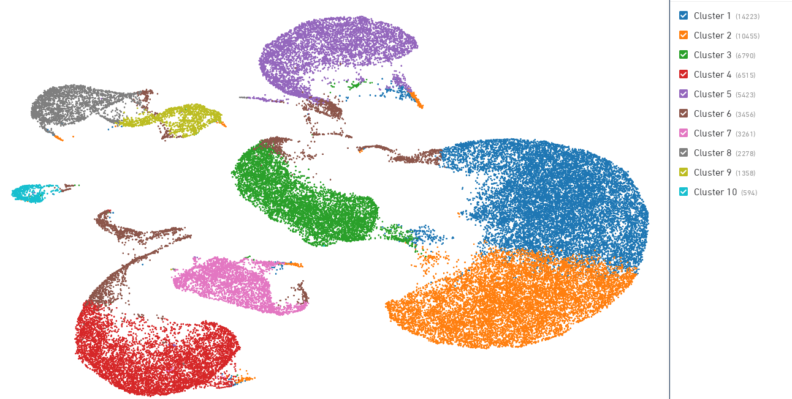
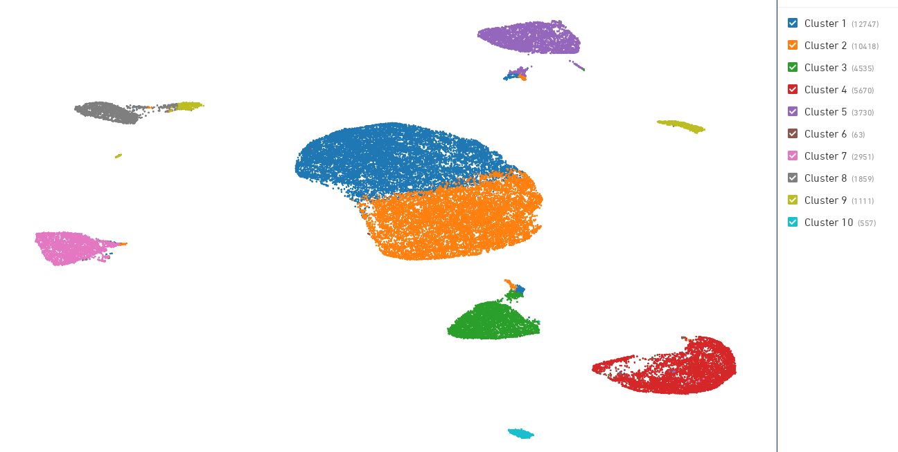
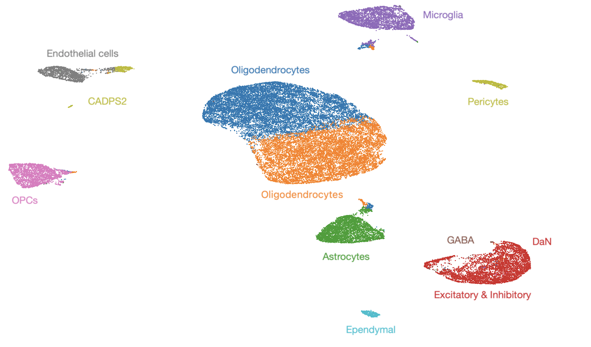
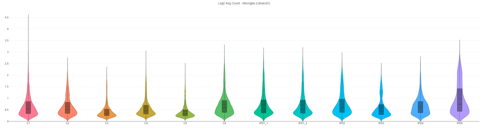
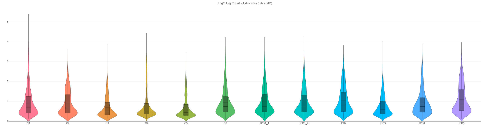
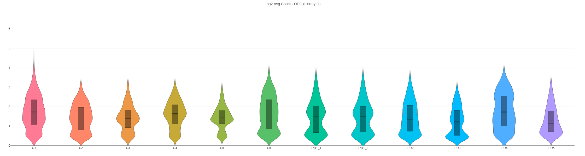

Loupe Browser
As it does not involve the need to do any programming, we used the desktop application Loupe Browser to analyse data from CellRanger for interactive visualization. Loupe Browser takes any .cloupe file generated by CellRanger as an input. Prior to analysis, we combined all samples by aggregating the outputs from cellranger count using the aggr pipeline (cellranger aggr). Then, we uploaded the generated .cloupe file to Loupe Browser. The cell ranger .cloupe file contains information about, inter alia, gene expression for cells in the sample and gene annotation for the transcriptome reference.
Identifying Cell Types
The 'Identifying cell types' Loupe Browser feature was used to find cell-types within the dataset. To do so, we used a genes_set_input_file dataset containing the name of the gene set followed by the gene IDs, which is provided by authors and available on github. We successfully created sets of markers containing the following cell types: oligodendrocytes (ODC), excitatory, microglia, oligodendrocytes precursor cells (OPC), astrocytes, endothelial, inhibitory, ependymal, CADPS2, GABA and dopaminergic neurons (DaNs).
Reclustering Workflow
Initially, the .cloupe gene expression dataset included 54,353 barcodes derived from a set of all samples. We performed a reclustering workflow in Loupe Browser by applying thresholds used by Smajic et al., 2020. Minimum thresholds for UMIs and features expression were set to 1500 and 1000 respectively. In order to filter cells by mitochondrial fraction, we used the human reference genome (hg19) and we set the maximum threshold to 10%. 43,641 barcodes were included in further analysis after performing reclustering.
Figure 1: UMAP embeddings prior to reclustering workflow
Figure 2: UMAP embeddings after the reclustering workflow
Manual cell cluster annotation
By applying information provided by Smajic et al., 2020 in the article, we manually annotated 10 K-means clusters with most abundant cell types. We were looking at expression of gene characteristics for each of the 12 imported cell types: ODC (characterized by the expression of MOBP), excitatory (SLC17A6), microglia (CD74), pericytes (PDGFRB), OPC (VCAN), astrocytes (AQP4), endothelial (CLDN5), inhibitory (GAD2), ependymal (FOXJ1), CADPS2 (CADPS2), GABAergic (GAD2/GRIK1) and DaNs (TH). We successfully annotated all custers as shown on Figure 3.
Figure 3: Annotated clusters
Comparison of cell type distribution
To investigate the cell-type composition difference between IPD and control samples, we retrieved the mean distribution of each cell-type per sample from Loupe Browser (Log 2 Avg Count). Then, we calculated the average distribution separately for IPD and control samples. Those data showed an increase in the fraction of microglia and astrocytes (see Figure 4&5) and a decrease in fraction of ODC in IPD samples compared to controls (Figure 6).
| Cell-type | IPD (Log2 Avg Count) | Controls (Log2 Avg Count) |
|---|---|---|
| Microglia | 0.743 | 0.591 |
| Astrocytes | 0.961 | 0.829 |
| Oligodendrocytes | 1.450 | 1.548 |
| GABA | 0.899 | 0.919 |
| DaNs | 0.770 | 0.8 |
| Ependymal | 0.750 | 0.7 |
| Inhibitory | 0.756 | 0.790 |
| Endothelial | 0.520 | 0.587 |
| Excitatory | 0.795 | 0.830 |
| OPC | 1.036 | 1.077 |
| CADPS2 | 0.689 | 0.733 |
Figure 4: Violin plot presenting an average distribution of Microglia across all samples
Figure 5: Violin plot presenting an average distribution of Astrocytes across all samples
Figure 6: Violin plot presenting an average distribution of ODC across all samples
In conclusion, our alternative analysis confirmed findings presented by Smajic et al., 2020. We showed increase of microglia and astrocyte abundance and a decreased fraction of ODC in IPD samples compared to controls.